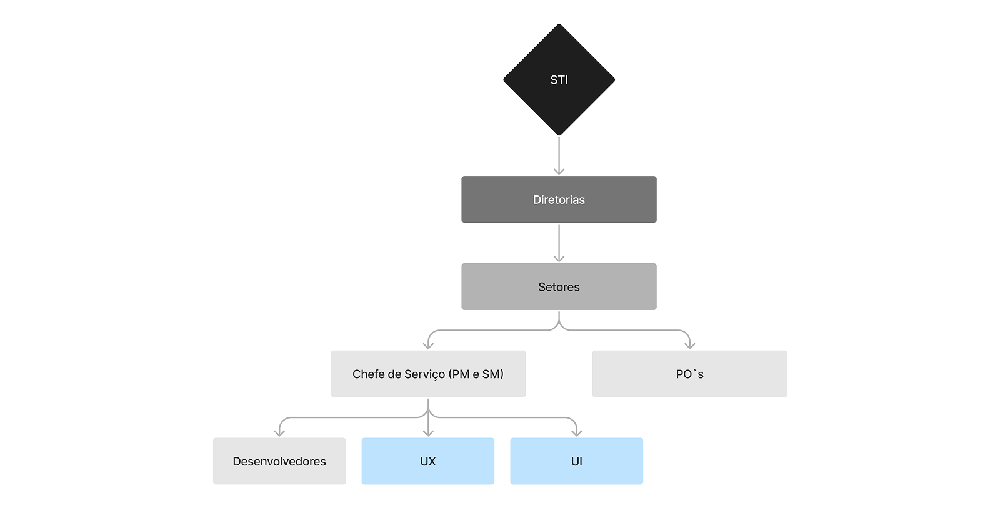
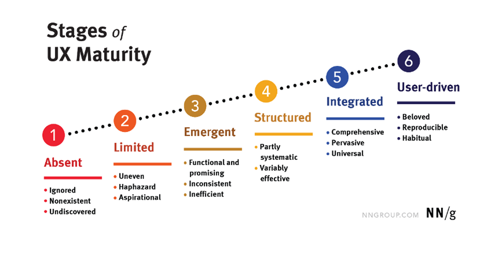
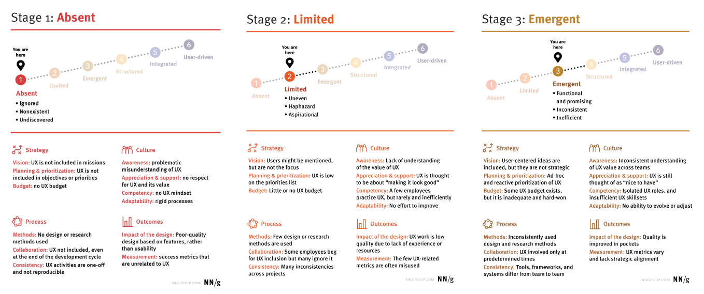
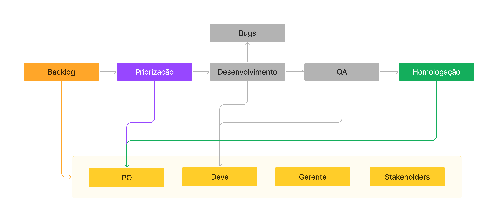
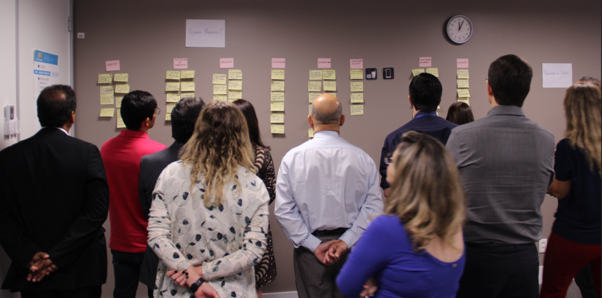
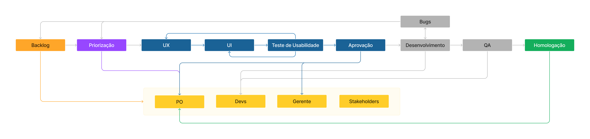
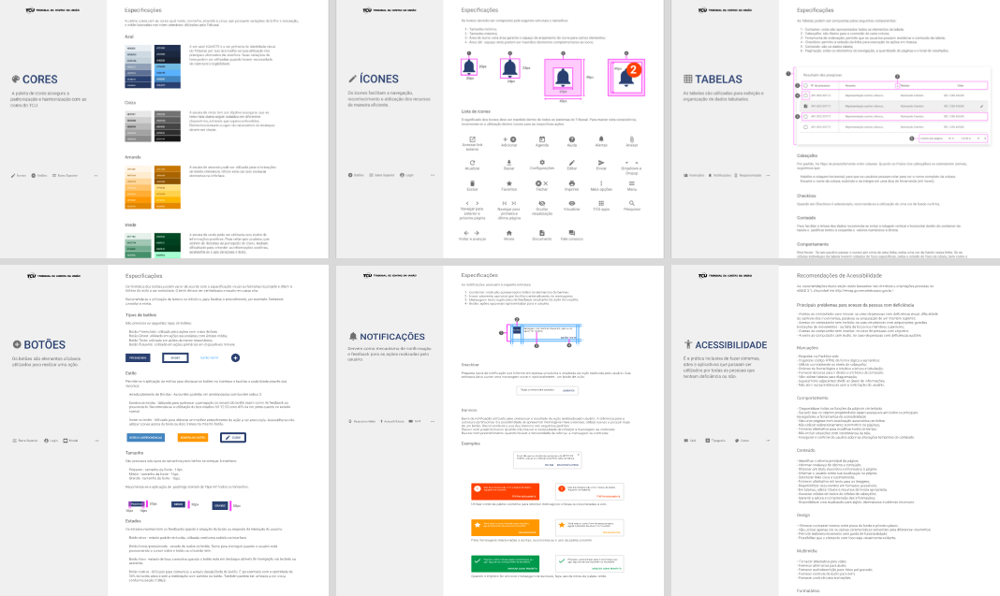
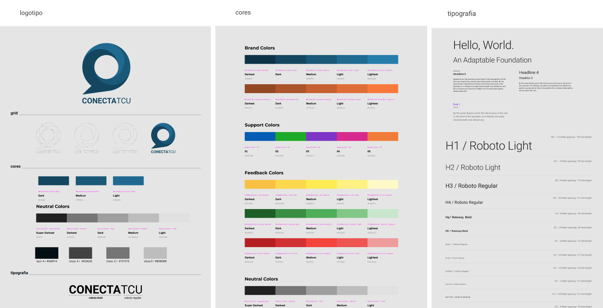

— CASE STUDY · DesignOps-TCU · 2019–2020
DesignOps-TCU.
Processos, Design System e documentação
01 — o que é e por quê?
Operacionalizando o design para gerar escala e consistência.
DesignOps foi um termo criado para descrever algumas práticas que já existiam nos ambientes corporativos, principalmente dentro de empresas já nascidas na era digital/pós-digital, mas que não eram formalizadas em um setor específico. Sendo assim, o DesignOps ou as operações em design, surgem para aumentar a escalabilidade do produto, gerando maior receita para a empresa, produtividade para as equipes e maior satisfação dos clientes por entregar um produto mais consistente.
À medida que as empresas amadurecem e investem em design, elas precisam operacionalizar o fluxo de trabalho, contratações e alinhamento entre as equipes. As operações de design são, basicamente, responsáveis por fazer o design acontecer dentro das empresas e ampliar o valor de seus produtos e serviços.
02 — cenário
Até o ano de 2017 o Setor de Tecnologia da Informação do TCU (STI) era composto por desenvolvedores, PO's e Chefes de Serviço que faziam o papel de Scrum Master (SM) e Gerente de Produto (PM). Em 2018 surge o primeiro contrato para UX/UI designers que iriam somar nos futuros processos e desenvolvimento de sistemas das diretorias desse setor.
Havia, portanto, um cenário de desenvolvimento de sistemas com pouquíssimos critérios e rigor metodológico no que se refere ao uso de princípios e processos de design. Em vista da chegada de profissionais de Design e da necessidade de se estruturar um processo de Design dentro do STI, foi definido um grupo de trabalho para planejar os processos de Design de Interfaces do TCU.
03 — o desafio
PROBLEMA CENTRAL
"Como podemos criar processos, projetos e produtos digitais de maneira organizada, escalável, com equipes mais produtivas e usuários mais satisfeitos?"
04 — resultados esperados e entregas
Os critérios de sucesso definidos para esse desafio foram:
Ter uma liderança que dê suporte e apoio para os times de Design.
Uma gestão de processos eficientes.
Estratégias alinhadas com as prioridades organizacionais.
E as entregas estruturais estabelecidas foram:
1. Wiki de Sistemas
Criação de uma Wiki para cada sistema desenvolvido no STI.
2. Guia de Interfaces
Criação de um Guia de Interface padronizado para os sistemas do STI.
3. Design Systems
Criação do Design System de cada sistema desenvolvido.
05 — meu papel
Planejamento, organização e liderança técnica.
Contribuí nesse projeto com o planejamento e organização do processo de Design do STI e na liderança de designers de experiência de usuário e de interface para garantir que entregassem artefatos de design de alta qualidade e com escalabilidade. Além disso, participei ativamente da criação das documentações entregues.
06 — o processo
O processo de DesignOps foi desenvolvido em três etapas bem objetivas devido à urgência e à falta de tempo disponível para sua implementação:
Diagnóstico
Verificação da estrutura do processo e mapeamento da maturidade inicial em UX Design no setor de TI do Tribunal.
Pesquisa
Compreensão dos perfis de cada colaborador no fluxo de tarefas do processo de UX Design do STI.
Entregas
Estabelecimento da nova organização, governança e fluxo de tarefas das equipes de UX do STI.
6.1 — Diagnóstico
Estrutura Organizacional Inicial
O STI se divide em diretorias que por sua vez se dividem em setores e cada um possui um chefe de serviço que faz o papel de Scrum Master e Gerente de Produto, um ou mais Product Owner, três ou quatro desenvolvedores e, com a chegada dos profissionais de UX e UI, havia um UX e um UI em cada setor. É importante pontuar que sem UXs e UIs designers, os ambientes digitais eram desenvolvidos e desenhados exclusivamente pelos desenvolvedores, gerando vários problemas de usabilidade e de consistência visual.

Estrutura organizacional básica do Setor de Tecnologia da Informação do TCU
Com a inclusão dos profissionais de experiência do usuário e de interface, alguns redesenhando e reestruturando sistemas já existentes, outros projetando novos e, conforme os projetos foram evoluindo, percebeu-se que os processos de pesquisa (UX), as interfaces visuais (UI), as rotinas e as entregas não estavam muito bem alinhadas em todos os times do STI. Portanto, havia um problema de consistência visual entre os sistemas, além de falta de padronização da experiência do usuário e documentação, uma vez que há muitos sistemas e interfaces, inclusive com linguagens diferentes. Daí surgiu a necessidade de padronizar e documentar os processos de UX e UI. Mas antes disso, precisávamos entender em qual nível de maturidade UX/UI estávamos. Podia parecer óbvio que estaríamos em níveis muito iniciais em qualquer escala de maturidade, porém era necessário detalhar quais eram essas condições iniciais e quais metas deveriam ser atingidas para evoluir para o próximo nível.
Maturidade em UX Design (NN/g Model)
Quando se fala de processos de UX em uma empresa, setor, ou projeto, é possível classificá-la ao nível ou grau de maturidade. Nesse caso, utilizamos os níveis de maturidade organizacional proposta pelo NN/g (Nielsen Norman Group), explicado com detalhes neste artigo oficial, para classificar o nível do STI.

Resumo dos seis níveis de maturidade feito pelo NNGROUP
Nesse modelo de maturidade, entendemos a Experiência do Usuário sob quatro aspectos: estratégia, cultura, processos e resultados. Para compreender onde estávamos exatamente nessa escala, o time de Design facilitou um workshop com gerentes e POs de cada setor para mapear as atividades, criar um novo fluxo de tarefas integrando as atividades de UX/UI e definir os próximos passos.

Os três primeiros níveis de maturidade para fazer o Zen Voting
Estratégia
- Visão: Usuários são mencionados, mas não são o foco (Nível 2);
- Planejamento e prioridades: UX não é incluído em objetivos ou prioridades (Nível 1);
- Budget: Não existe (Nível 1).
Cultura
- Conhecimento: Não entendem sobre UX (Nível 1);
- Apoio: Entendem UX como "deixar bonito visualmente" (Nível 2);
- Competência: Sem mentalidade de UX (Nível 1);
- Adaptabilidade: Pouco esforço para melhorar (Nível 2).
Processos
- Método: Nenhum método de UX é utilizado (Nível 1);
- Colaboração: UX é pontual e frequentemente ignorado (Nível 2);
- Consistência: Atividades básicas não replicáveis (Nível 1).
Resultados
- Impacto: Inexistente, entregas focadas em features (Nível 1);
- Mensuração: Poucas métricas coletadas e subutilizadas (Nível 2).
Concluiu-se que a maturidade dos processos de UX no STI possuía elementos entre o Nível 1 (Ausente) e o Nível 2 (Limitado), o que justificava plenamente a estruturação urgente de operações de design.
6.2 — Pesquisa & Diagrama de Afinidades
O objetivo desta etapa foi entender o fluxo de tarefas inicial para adaptá-lo a um novo modelo integrando processos de Design (UX/UI). Para aperfeiçoar essa rotina, propusemos o uso de um Diagrama de Afinidades construído colaborativamente.

Fluxo de tarefa padrão de um setor do STI sem UX e UI designers
Co-criação com Diagrama de Afinidades
Reunimos desenvolvedores, UX/UI designers, product owners e gerentes de diferentes setores para desenhar um fluxo mais otimizado. Esse exercício permitiu que todos participassem ativamente da construção das rotinas que usariam diariamente no trabalho.

Criação do mapa de afinidades para a definição do novo processo de trabalho do STI
6.3 — Entregas Concretas
Novo Fluxo de Tarefas Padrão
Como resultado dos esforços do time de Design e da colaboração com as outras áreas, desenvolvemos um fluxo de trabalho compatível com a nova estrutura, trazendo processos claros e melhoria na qualidade final das entregas.

Novo fluxo de tarefas padrão de uma equipe do STI
Guia de Interfaces para Sistemas do TCU
Estruturamos e organizamos um Guia de Interfaces para o STI baseado no Material Design do Google. Adaptando essas diretrizes para a nossa realidade governamental, criamos o Guia de Interfaces para Sistemas do TCU (PDF), garantindo padronização estética e usabilidade preditiva.

Guia de Interfaces para Sistemas do TCU
Design System dos Sistemas do Tribunal
Como complemento ao Guia, estabeleceu-se a criação dos componentes de cada sistema do STI. Cada produto desenvolvido passou a ter seu próprio Design System modular, frutos de uma força-tarefa entre designers e desenvolvedores para permitir escalabilidade e consistência em código.

Design System CONECTA-TCU
07 — resultados alcançados
A inclusão da liderança de cada setor nesse processo foi determinante para a consolidação do time de Design, seus processos e decisões, conquistando apoio direto para frentes futuras. O novo fluxo permitiu uma gestão de processos significativamente mais eficiente.
Além disso, as documentações (Wikis, Guia de Interface e Design Systems) conferiram celeridade à construção dos protótipos e ao desenvolvimento front-end: os protótipos passaram a ser gerados diretamente em alta fidelidade e com reaproveitamento de componentes já prontos no código.
08 — o que aprendi & próximos passos
Liderança, gestão e visão sistêmica de produto.
A criação de toda a documentação e do processo de design foi um esforço paralelo de alta complexidade. Foi crucial aprender a gerir o tempo para não impactar entregas em andamento e aprimorar habilidades de comunicação executiva com as lideranças do tribunal.
Liderança e Gestão: Guiar o time de UX/UI e saber delegar tarefas respeitando o perfil técnico e comportamental de cada membro foi uma das experiências mais enriquecedoras da minha carreira. Trabalhar colaborativamente nessa liderança gerou meses de trocas intensas e um resultado institucional de alto valor.
Próximos Passos:
Todas as entregas foram finalizadas, mantendo-se o compromisso de revisões e atualizações periódicas das documentações à medida que novos sistemas e tecnologias forem incorporados pelo Tribunal de Contas da União.